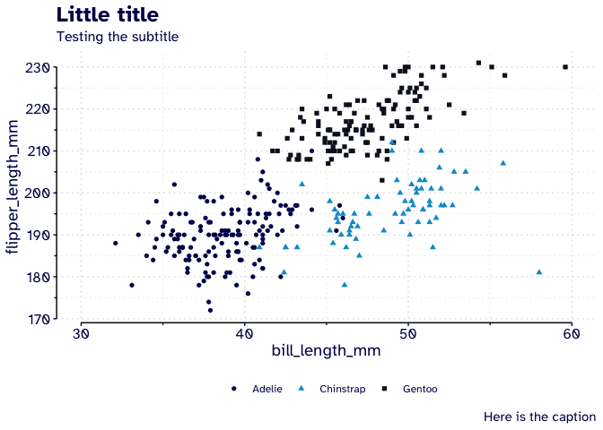
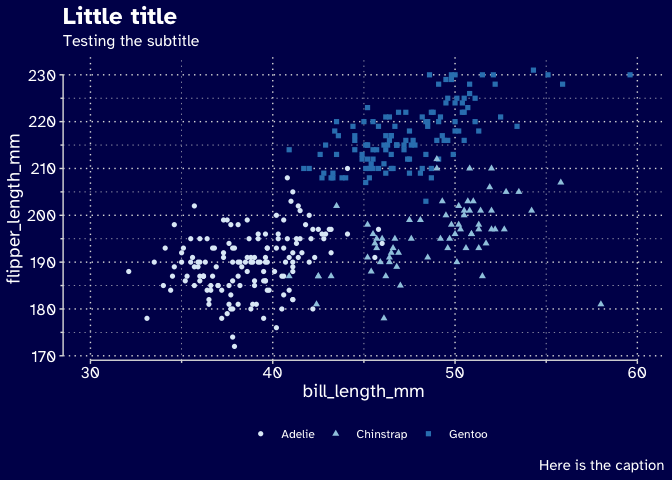

The goal of eafithemer is to provide a simple theme using EAFIT university institutional aesthetics.
Installation
You can install the development version from GitHub with:
install.packages("devtools")
devtools::install_github("camilogarciabotero/eafithemer")Examples
This is a basic example Showing the light template:
library(ggplot2)
library(palmerpenguins)
library(ggprism)
library(eafithemer)
ggplot(penguins, aes(bill_length_mm, flipper_length_mm)) +
geom_point(aes(color = species, shape = species)) +
labs(
title = "Little title",
subtitle = "Testing the subtitle",
caption = "Here is the caption"
) +
eafithemer::theme_eafit_light() +
eafithemer::scale_color_eafit() +
theme(
legend.title = element_blank(),
axis.line = element_line(),
text = element_text(family = "Atkinson Hyperlegible")
) +
scale_x_continuous(guide = "prism_offset_minor", limits = c(30, 60)) +
scale_y_continuous(guide = "prism_offset_minor") 
For dark theme see:
library(ggplot2)
library(palmerpenguins)
library(ggprism)
library(eafithemer)
ggplot(penguins, aes(bill_length_mm, flipper_length_mm)) +
geom_point(aes(color = species, shape = species)) +
labs(
title = "Little title",
subtitle = "Testing the subtitle",
caption = "Here is the caption"
) +
eafithemer::theme_eafit_dark() +
scale_color_brewer() +
theme(
legend.title = element_blank(),
axis.line = element_line(color = "#DDDDDD"),
text = element_text(family = "Atkinson Hyperlegible")
) +
scale_x_continuous(guide = "prism_offset_minor", limits = c(30, 60)) +
scale_y_continuous(guide = "prism_offset_minor") 

Citation
If you find this package useful, please consider the following citation!
Camilo García-Botero. (2021, April 8). eafithemer: a simple ggplot2 theme for EAFIT institution (Version 1.0.1). Zenodo. http://doi.org/10.5281/zenodo.4672820
Credits
This package was highly based on Ryo Nakagawara tvthemes package.